import { ElButton } from 'element-plus' 根路径导入 ——
JS 从 908.81 kB 只降到 906.98 kB，几乎没动。
根因是 es/index.mjs 是 301 行的 barrel，只要有一处根导入，整棵组件树就进图，
而组件顶层调用的 withInstall() 未标 /*#__PURE__*/，Rollup 摇不掉。
正解是两头收口：组件走自身深路径 + 所有业务引用统一到单一入口。
| 视口 | 指针 | 小目标 <44px | 低于 24px | 横向溢出 | 不可达内容 |
|---|---|---|---|---|---|
| 375px | 触屏 | 35 → 0 | 0 | 0 | 0px |
| 768px | 触屏 | 52 → 0 | 0 | 0 | 0px |
| 1024px | 鼠标 | 166 (见注) | 36 → 0 | 0 | 0px |
| 1440px | 鼠标 | 166 (见注) | 36 → 0 | 0 | 0px |
新增的 44px 规则整块包在
(max-width: 1023.98px) ∩ (pointer: coarse) 内。审计脚本每页都输出指针类型，
1024 / 1440 两档实测均报告 [鼠标] —— 媒体查询不匹配，新规则在桌面完全不参与级联。
这是可验证的事实，不是推断。
LiveClock.vue，原先每秒触发整个 Layout（含 10 项侧栏）重渲染，现在只有叶子组件重渲染。el-button is-link 仅 20px 高，低于 WCAG 下限，养老场景下对长者尤其不友好。| 脚本 | 作用 |
|---|---|
check-element-imports.mjs | 新增。静态比对模板用到的 el-* 与注册清单（含弹层内部的不渲染组件）；禁止绕过插件入口的根导入 |
smoke.mjs | 增强。新增「未注册组件」检测（Vue 只发 warn 不发 error，原本抓不到）+ 弹层交互阶段（3 弹窗 1 抽屉） |
responsive-audit.mjs | 修正触控口径；每页输出指针类型，用于证明桌面未受新规则影响 |
弹层必须单独测：el-dialog / el-drawer 默认 Teleport 且不挂载，
遍历路由时压根没渲染 —— 按需引入漏注册这类组件，路由检查一个都抓不到。
这是「静态清单对得上、运行时却静默降级」的唯一盲区。
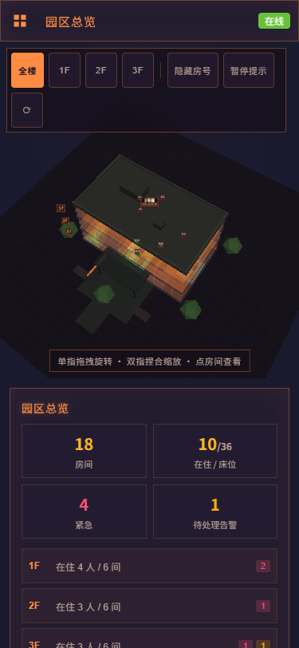
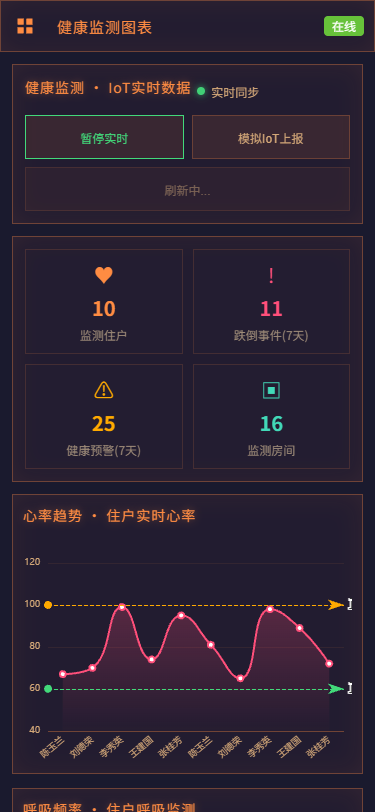
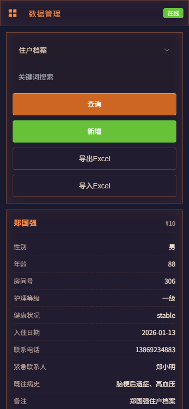
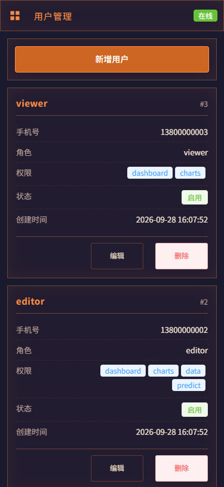
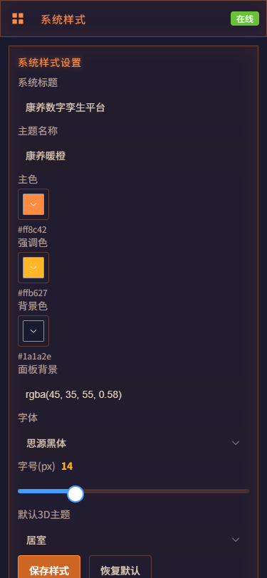
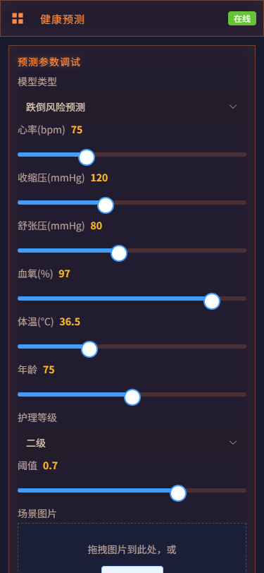
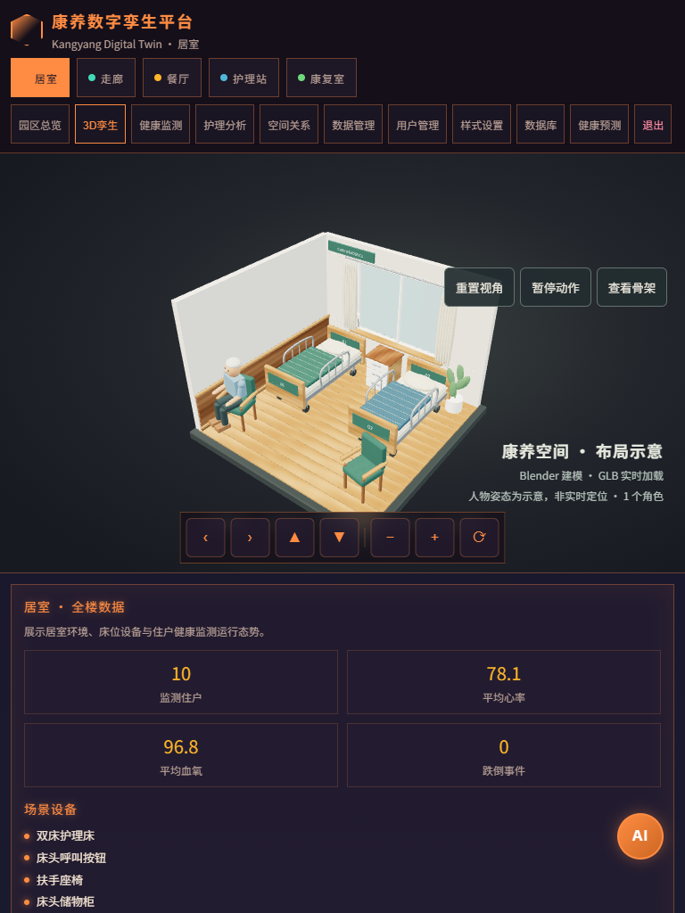
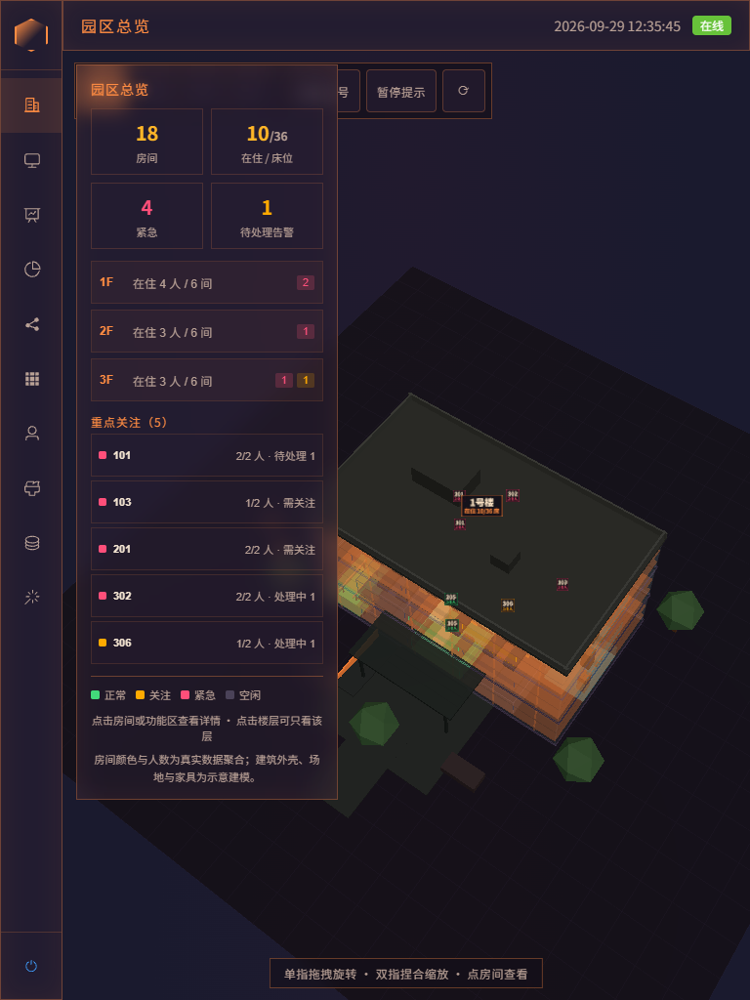
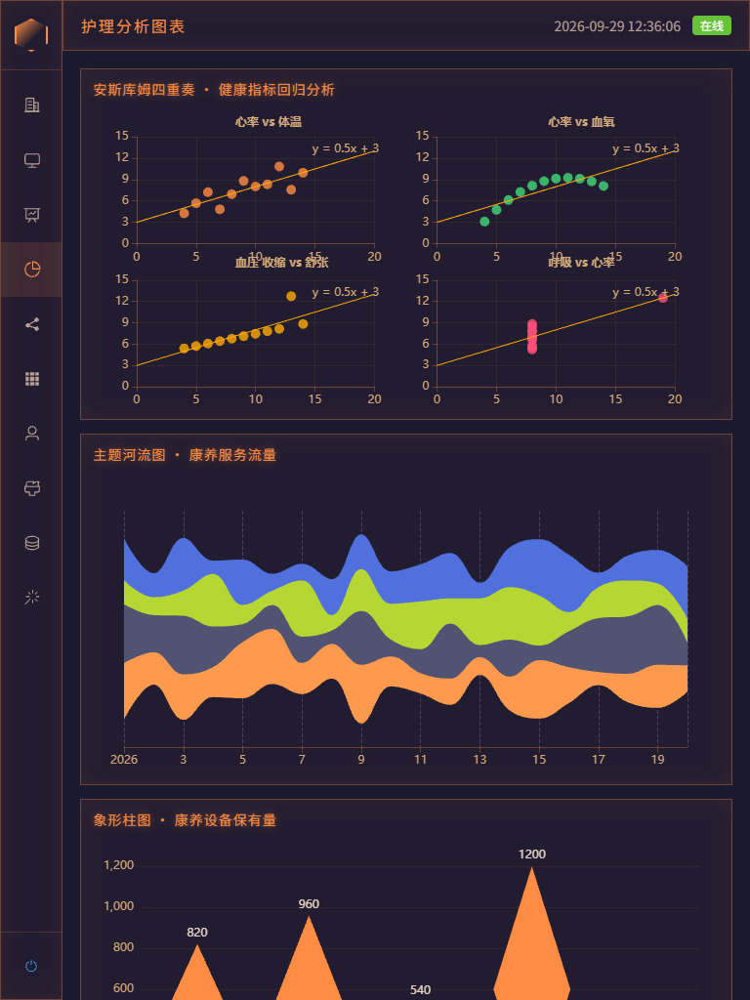
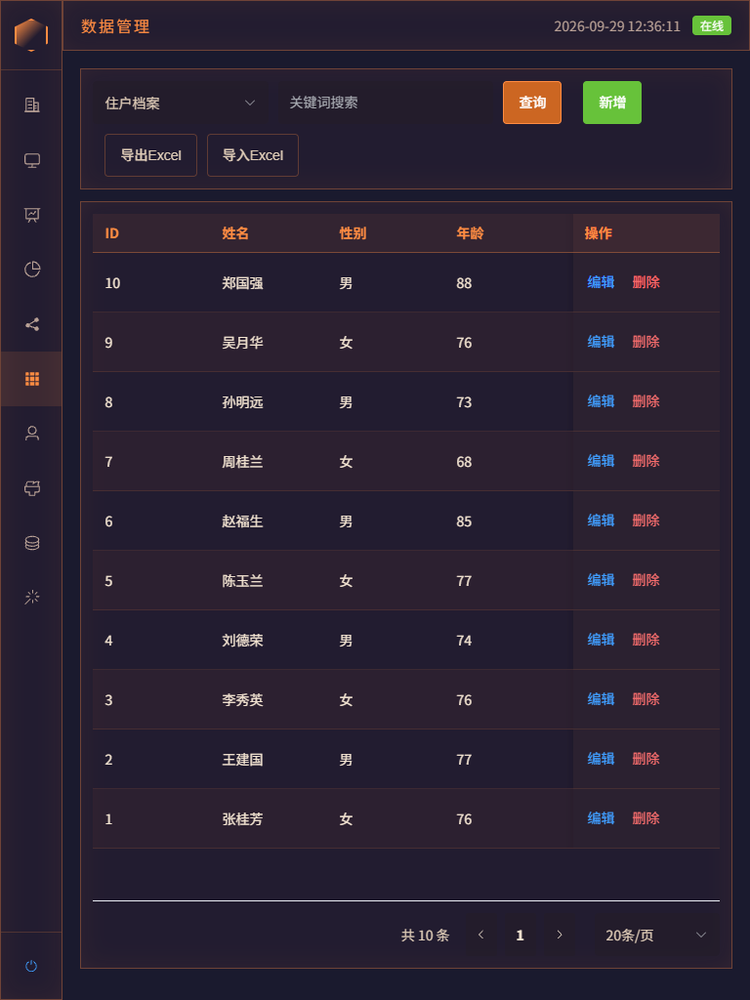
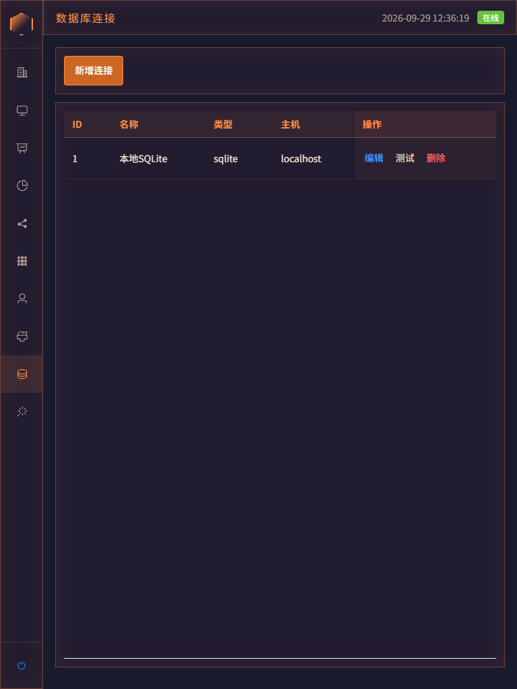
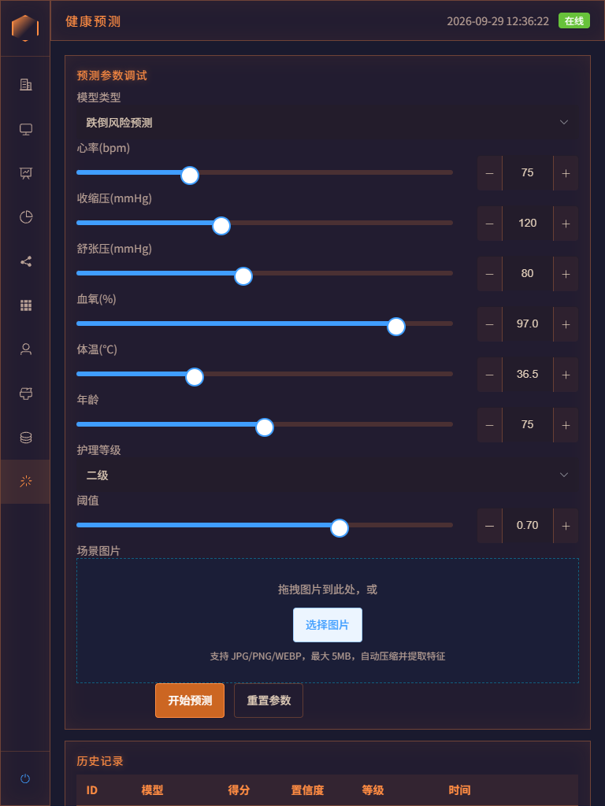
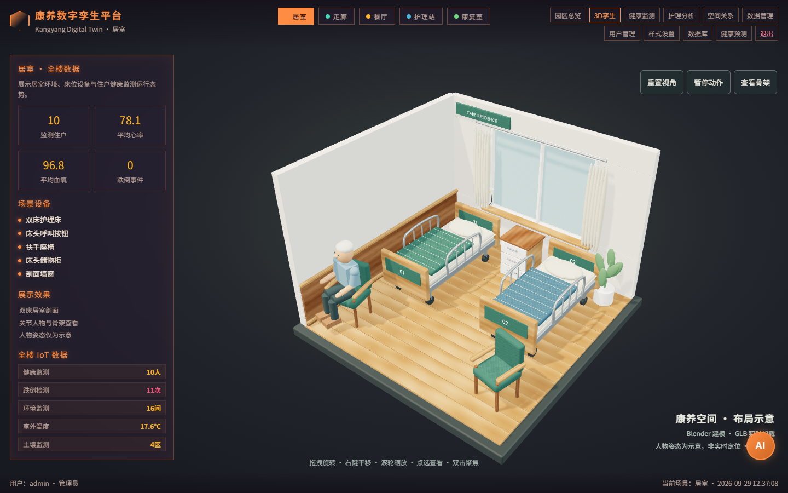
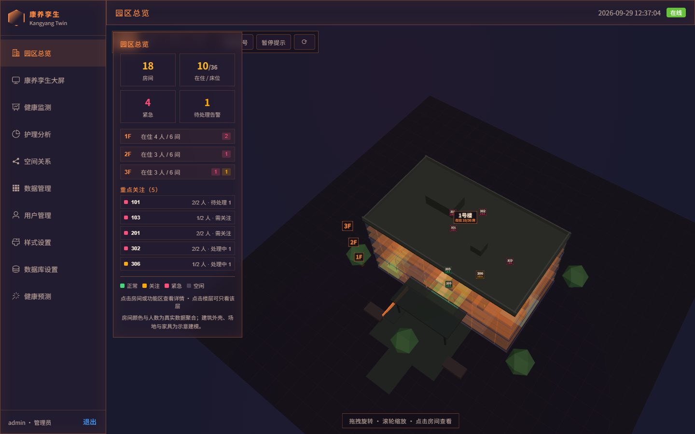
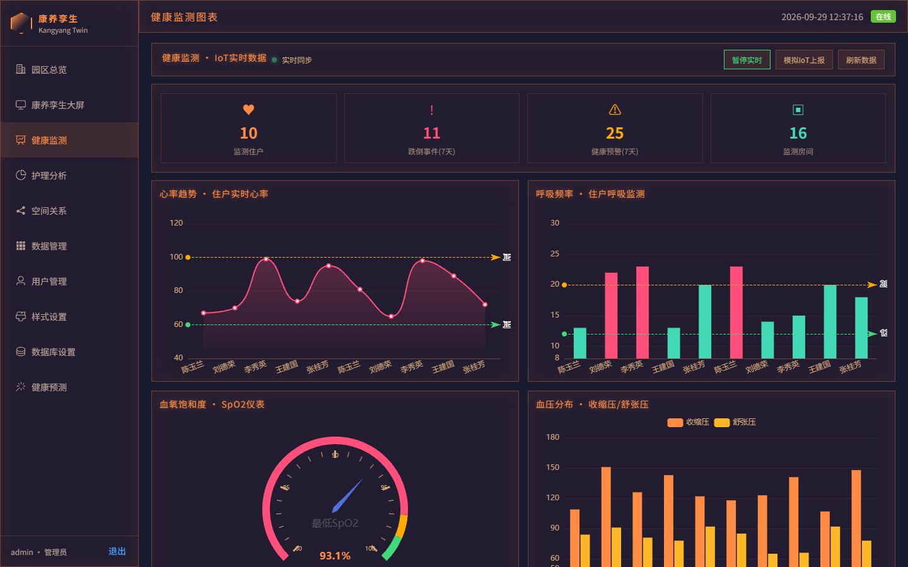
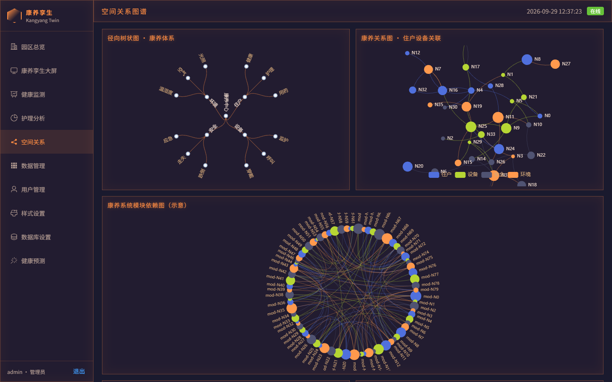
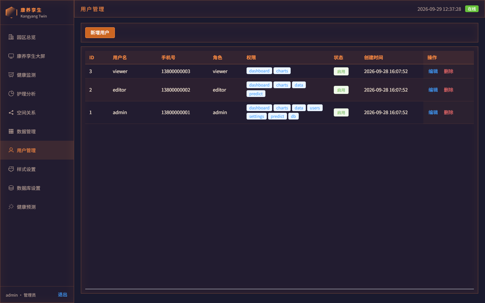
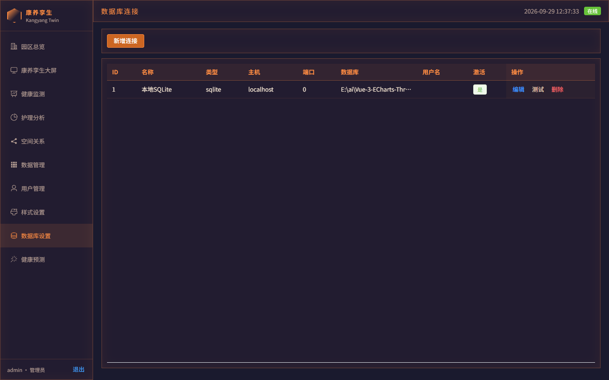
| 检查项 | 结果 |
|---|---|
| 样式语言守卫 | 通过（无纯 CSS 块误用 SCSS 语法） |
| 按需注册守卫 | 28/28 组件对齐，无绕过引用 |
| 端到端冒烟 | 路由 10/10、弹层 4/4、控制台错误 0、未注册组件 0 |
| 响应式实测 | 40 组样本：溢出 0、不可达 0、触屏小目标 0 |
| 构建 | 成功，首屏 gzip 315.3 kB |
vendor-echarts 1.48MB 仍是最大 chunk。若继续优化，建议改 echarts/core 按需注册，预估同样接近一半下降空间 —— 本期未动，因涉及 6 个页面 import 方式改动，风险量不同。dist/ 仍是旧产物，新构建在 dist-after-element/。发布前建议上线比对一轮公网首屏（此前记录约 10.3s）确认收益。